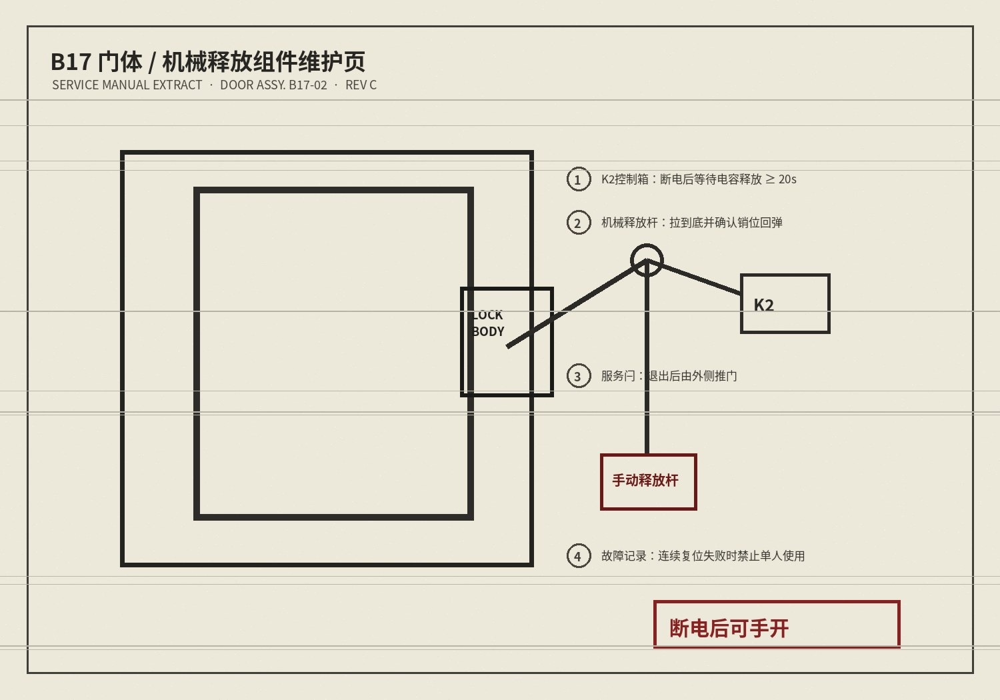

DEVICE MAINTENANCE / B17 / WORK ORDER
设备维护 > B区 > B17 磁锁
B17 门禁 / 工单记录
工单历史
| 09/14 | B17 复位一次失败；人工重启恢复。 | 观察 |
|---|---|---|
| 09/16 | 再次失败；建议 09/17 不排单人项目。 | 待控制盒 |
| 09/17 21:06 | 负责人备注：“今晚先用，明天一起换控制盒。” | 继续使用 |
| 09/18 02:44 | 值班群提出从设备廊执行机械释放。 | 未立即执行 |
维护手册 / B17-MAG-04

- 切断控制箱 K2 供电并等待电容放电。
- 从服务走廊拉下机械释放杆，确认指示销归位。
- 退出服务闩后，由外侧推开门体。
培训参考：熟练员工约 2 分 30 秒。
09/16 工单：“断电后可手开”已记录在维护说明。